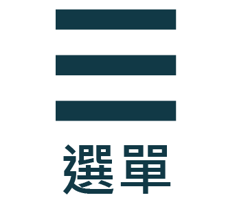

自古以來一直存在這樣的說法——「藥食同源」，它意味著將一些中藥材用作藥膳、食品原料或各種食品產品的一部分。例如，將百合、銀耳或枸杞等添加到菜肴中，以起到調養身體的作用，或者利用這些中藥材的顏色、香氣和味道來增添食品的風味和營養價值。 我們致力於探索藥食同源的根本，已有十年的專注於植物提取物的研究。我們期望透過食療的方式來改善身體健康。我們結合了中醫五行調養的理念，讓身體時刻保持健康，讓民眾在享用食物的同時也能調整身體的氣場。最重要的是，我們相信「心」的改變，一個念頭的轉變可能會點燃已經熄滅的希望之火。 這個理念的核心是，通過藥食同源的方式，我們可以在飲食中找到藥物的力量，以提高身體健康，同時也要注重內心的平靜和積極的思維，因為這可以對身體產生深遠的影響。
我們公司在嘉義市西區北港路65號4樓，歡迎各位蒞臨指教!!
有任何想問的或不懂歡迎與我們討論，公司的電子郵件service@peiteyu.com。
以下為我們官方帳號↓


九年前，我們是一家位於台南新營工業區的動物食品研發、植物萃取以及加工出口工廠。雖然我們的工廠相對較小，但我們的使命卻是巨大的，我們致力於幫助當地農民解決飼養上的困難，同時提高他們的平均產量；然而，在事業逐漸穩定發展的時候，因30年前車禍所發生的舊疾，讓我每天飽受病痛與絕望的情緒中，但幸運的是有家人和友人無私的支持與幫助，使我得以度過最艱難的時光。儘管我倖存下來，但這場意外留下了許多後遺症，對我的生活產生了巨大的影響，為了重新找回自己，我付出了不懈的努力。日夜不停地進行植物萃取研發，最終成功地萃取出山葵中「異硫氰酸酯」，這是純山葵萃取物的精華。這個神奇的植物萃取物不僅讓我恢復了正常人的生活，還使我看起來年輕了許多，這不僅是一個技術突破的故事，更是一個生命的奇蹟。
我們將持續利用我們獨特的萃取技術，找到天然植物的精華，讓更多人認識大自然的恩惠。